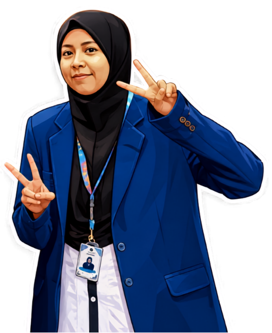
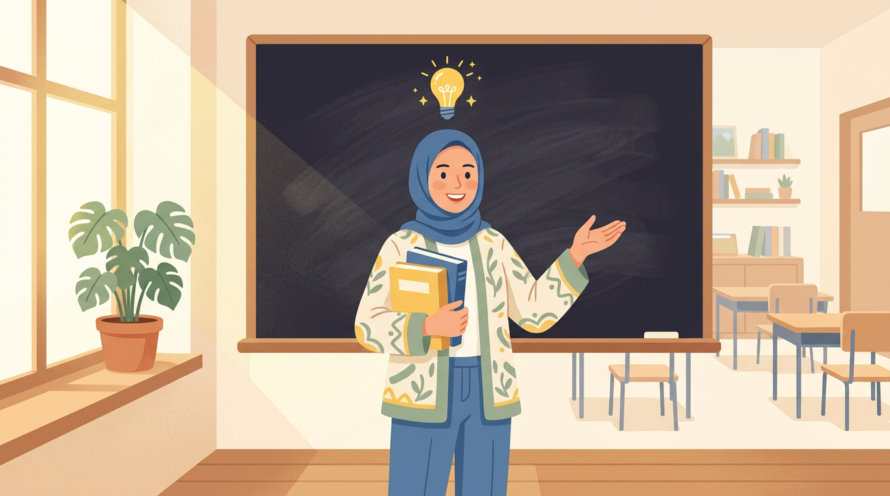

Perjalanan, Pembelajaran, dan Dedikasi Menuju Guru Profesional yang Berdampak

Mata kuliah Filosofi Pendidikan dan Pendidikan Nilai memberikan pemahaman bahwa tugas guru tidak hanya menyampaikan materi, tetapi juga mendidik peserta didik agar berkembang secara utuh sesuai kodrat alam dan kodrat zamannya. Guru memiliki peran sebagai fasilitator, pembimbing, sekaligus teladan dalam membentuk karakter peserta didik. Proses pembelajaran harus menciptakan lingkungan yang aman, bermakna, dan menghargai keberagaman potensi setiap peserta didik.
Tantangan yang saya hadapi adalah mengintegrasikan pendidikan nilai secara konsisten dalam setiap pembelajaran, menjadi teladan melalui sikap dan tindakan, serta menjaga profesionalisme dan kode etik guru di tengah berbagai tuntutan tugas dan administrasi. Kondisi ini menuntut saya untuk terus belajar, melakukan refleksi, dan berkomitmen memperbaiki praktik pembelajaran secara berkelanjutan.
Landasan Filosofi Pendidikan Nasional
Filosofi Pendidikan Ki Hajar Dewantara memberikan pandangan bahwa Pendidikan harus sesuai kodrat alam dan kodrat zaman dengan berlandaskan nilai-nilai Pancasila. Guru berperan sebagai teladan, pembimbing, dan fasilitator yang berpihak pada kebutuhan peserta didik.
Pola Pikir Bertumbuh Dalam Pendidikan Nasional
Guru harus memahami bahwa kemampuan peserta didik dapat terus berkembang melalui usaha, latihan, dan pengalaman belajar. Oleh karena itu, guru perlu memberikan motivasi, apresiasi terhadap proses, serta umpan balik yang membangun.
Pendidikan Nilai dalam Kerangka Pendidikan Nasional
Pendidikan tidak hanya berfokus pada pencapaian akademik, tetapi juga pada pembentukan karakter. Nilai-nilai seperti kejujuran, tanggung jawab, disiplin, gotong royong, dan kepedulian perlu diintegrasikan dalam setiap proses pembelajaran.
Kode Etik Guru
Guru harus menjalankan profesinya dengan profesionalisme, integritas, dan tanggung jawab. Guru juga berkewajiban menghormati hak peserta didik, menjaga etika profesi, serta terus mengembangkan kompetensi untuk meningkatkan kualitas pembelajaran.
Berpusat pada Peserta Didik
Merancang pembelajaran yang sesuai dengan kebutuhan, karakteristik, dan kemampuan peserta didik sehingga mereka berperan aktif dalam proses belajar.
Menanamkan Nilai dan Karakter
Menanamkan nilai-nilai seperti kejujuran, disiplin, tanggung jawab, kerja sama, dan rasa percaya diri dalam setiap kegiatan pembelajaran matematika.
Mendorong Berpikir Kritis dan Kolaboratif
Memberikan kesempatan kepada peserta didik untuk menganalisis masalah, berdiskusi, mengemukakan pendapat, serta menghargai ide orang lain.
Reflektif dan Terus Berinovasi
Melakukan evaluasi terhadap proses pembelajaran secara berkala dan memanfaatkan hasil refleksi untuk meningkatkan kualitas pembelajaran.
Menciptakan Pembelajaran yang Bermakna dan Menyenangkan
Menciptakan suasana belajar yang aktif, interaktif, dan kontekstual sehingga peserta didik merasa nyaman, termotivasi, dan mudah memahami konsep.
Menjunjung Tinggi Profesionalisme dan Etika Guru
Melaksanakan tugas dengan integritas, tanggung jawab, dan etika profesi serta memberikan layanan pendidikan yang adil, berkualitas, dan berorientasi pada perkembangan peserta didik.
Pembelajaran dalam mata kuliah ini membuka wawasan saya bahwa pendidikan adalah seni membentuk manusia seutuhnya. Diskusi-diskusi kelas tentang nilai-nilai pendidikan membuat saya menyadari tanggung jawab moral seorang guru sangat besar. Saya belajar bahwa setiap interaksi dengan peserta didik adalah kesempatan untuk menanamkan nilai-nilai positif.
Materi pada mata kuliah ini tentu sangat berkaitan dengan peran saya sebagai calon guru. Mata kuliah ini merupakan bentuk implementasi nyata dari setiap mata kuliah yang saya pelajari selama PPG. Melalui mata kuliah ini saya mendapatkan pengalaman mengenai implementasi nyata pembelajaran di sekolah dengan karakteristik peserta didik yang sangat beragam. Melalui mata kuliah ini saya menyadari pentingnya fleksibilitas seorang guru karena kondisi lapangan tidak selalu sama dengan bayangan kita saat menyusun rencana pembelajaran.
Materi perkuliahan ini yang cukup berbeda dari praktik pembelajaran yang selama ini saya lakukan adalah pendekatan Culturally Responsive Teaching (CRT) dan Teaching at the Right Level (TaRL). Kedua pendekatan tersebut sebelumnya masih cukup asing bagi saya karena selama ini saya cenderung memberikan perlakuan pembelajaran yang hampir sama kepada seluruh murid. Setelah mempelajari TaRL, saya mulai memahami pentingnya menyesuaikan pembelajaran dengan kemampuan awal murid yang dapat diketahui melalui asesmen diagnostik. Namun, dalam praktiknya, saya masih belum menerapkan TaRL karena saya masih merasa bingung bagaimana menyusunnya. Penerapan TaRL ini masih menjadi tantangan bagi saya karena hasil asesmen diagnostik belum sepenuhnya dapat menggambarkan kemampuan aktual murid di kelas saya. Beberapa murid masih cenderung mencontek jawaban teman ketika mengerjakan asesmen diagnostik sehingga hasil yang diperoleh relatif seragam. Kondisi tersebut membuat saya kesulitan dalam memetakan kemampuan awal dan menentukan bentuk scaffolding yang sesuai. Sementara itu, CRT sebenarnya sudah pernah saya terapkan melalui pengaitan materi dengan konteks budaya dan kehidupan murid, tetapi saya merasa bahwa penerapannya belum sepenuhnya sampai pada esensi pembelajaran yang responsif terhadap latar belakang budaya murid. Terlebih lagi, karakteristik murid yang cenderung kurang tertarik pada bacaan yang panjang membuat saya perlu mencari cara yang lebih sederhana dan menarik agar konteks budaya tidak hanya menjadi contoh dalam pembelajaran, tetapi dapat benar-benar dipahami dan dimaknai oleh murid.
Sebagai calon guru, salah satu konsep utama yang semakin saya pahami melalui PPL 2 adalah bahwa pembelajaran perlu dirancang berdasarkan kebutuhan dan kondisi nyata murid, bukan hanya berdasarkan materi yang harus disampaikan. Saya mulai memahami bahwa setiap murid memiliki kemampuan awal, kebutuhan, dan karakteristik yang berbeda sehingga guru perlu melakukan asesmen dan pengamatan sebelum menentukan strategi pembelajaran. Pemahaman tersebut semakin saya sadari melalui konsep Teaching at the Right Level (TaRL), yang menekankan pentingnya menyesuaikan pembelajaran dengan tingkat kemampuan aktual murid, serta Culturally Responsive Teaching (CRT), yang mengajarkan pentingnya mengaitkan pembelajaran dengan latar belakang dan konteks kehidupan murid. Selain itu, saya semakin memahami bahwa peran guru bukan hanya menyampaikan materi, tetapi juga menjadi fasilitator dan pamong yang menciptakan kondisi agar murid dapat belajar sesuai kebutuhannya. Konsep-konsep tersebut menjadi penting bagi saya karena selama praktik mengajar saya menyadari bahwa memberikan perlakuan yang sama kepada seluruh murid belum tentu dapat memenuhi kebutuhan belajar mereka. Oleh karena itu, saya perlu terus belajar untuk menjadi guru yang lebih peka terhadap kondisi murid dan mampu menyesuaikan pembelajaran berdasarkan kebutuhan mereka.
Beberapa perubahan yang ingin saya lakukan adalah:
1. Meningkatkan kemampuan dalam memahami karakteristik, kebutuhan, dan perkembangan setiap murid agar dapat menjadi guru yang profesional dan reflektif.
2. Membiasakan diri melakukan analisis kebutuhan murid sebelum merancang perencanaan pembelajaran, sehingga strategi yang digunakan lebih relevan dengan kebutuhan murid.
3. Menjadi guru yang lebih adaptif dan tidak terlalu terpaku pada rencana. Saya memahami bahwa perangkat dan rencana pembelajaran merupakan pedoman, bukan sesuatu yang harus selalu dilaksanakan secara kaku. Kondisi peserta didik dan situasi kelas dapat berubah sehingga guru perlu mampu mengambil keputusan dan melakukan penyesuaian secara spontan.
4. Menjadikan asesmen sebagai bagian dari proses perbaikan pembelajaran, sehingga hasil asesmen tidak berhenti pada pemberian nilai, tetapi digunakan untuk menentukan tindak lanjut yang sesuai dengan kebutuhan murid.
Pengalaman PPL adalah transisi penting dalam perjalanan saya menjadi guru. Saya belajar bahwa rencana pembelajaran yang sempurna tidak menjamin hasil yang sempurna. Yang lebih penting adalah kemampuan membaca situasi kelas dan merespons kebutuhan siswa secara real-time. Feedback dari guru pembimbing sangat berharga dalam memperbaiki praktik mengajar saya.
Mata kuliah ini menghubungkan saya dengan realitas bahwa setiap peserta didik adalah individu unik dengan kebutuhan dan cara belajar yang berbeda.
Tantangan adalah merancang pembelajaran yang inklusif dan dapat memenuhi kebutuhan beragam siswa dalam satu kelas.
Konsep utama adalah diferensiasi pembelajaran dan pemahaman tentang gaya belajar, kecerdasan majemuk, dan karakteristik perkembangan peserta didik.
Saya berubah dari guru yang mengharapkan semua siswa belajar dengan cara yang sama, menjadi guru yang menghargai keberagaman dalam pembelajaran.
Mata kuliah ini membuka mata saya bahwa "one size fits all" tidak berlaku dalam pendidikan. Saya belajar tentang teori perkembangan kognitif, emosional, dan sosial peserta didik. Pemahaman ini sangat penting untuk merancang pembelajaran yang efektif dan bermakna. Saya menyadari bahwa mengenal siswa secara personal adalah kunci pembelajaran yang sukses.
Mata kuliah ini menghubungkan saya dengan pemahaman bahwa kemampuan dapat dikembangkan melalui usaha dan strategi yang tepat.
Tantangan terbesar adalah mengubah pola pikir fixed mindset yang sudah terbentuk selama ini, baik pada diri sendiri maupun siswa.
Konsep utama adalah perbedaan antara growth mindset dan fixed mindset, serta bagaimana language dan feedback dapat mempengaruhi mindset siswa.
Saya berubah dari seseorang yang takut akan kegagalan menjadi seseorang yang melihat kegagalan sebagai kesempatan untuk belajar dan berkembang.
Mata kuliah ini sangat transformatif bagi saya. Saya belajar bahwa cara kita memandang kemampuan dan kecerdasan sangat mempengaruhi cara kita belajar dan mengajar. Carol Dweck's research tentang growth mindset memberikan framework yang jelas. Saya sekarang lebih sadar dalam memberikan praise yang berfokus pada proses dan usaha, bukan hanya hasil akhir.
Mata kuliah ini menghubungkan saya dengan pemahaman bahwa pembelajaran yang bermakna memerlukan kedalaman, bukan sekadar menghafal.
Tantangan adalah mendesain pembelajaran yang mendorong pemikiran tingkat tinggi sambil tetap memenuhi tuntutan kurikulum yang luas.
Konsep utama meliputi deep learning strategies, higher-order thinking skills (HOTS), dan asesmen formatif yang mendukung pembelajaran.
Saya berubah dari guru yang fokus pada penyelesaian materi menjadi guru yang fokus pada pemahaman mendalam dan aplikasi konsep.
Mata kuliah ini mengubah perspektif saya tentang asesmen. Saya belajar bahwa asesmen bukan hanya untuk mengukur, tetapi untuk meningkatkan pembelajaran. Konsep assessment for learning sangat relevan dengan praktik pembelajaran modern. Saya sekarang lebih terampil dalam merancang tugas-tugas yang mendorong analisis, evaluasi, dan kreasi, bukan sekadar recall informasi.
Cara berpikir untuk memecahkan masalah secara sistematis — tidak selalu dengan komputer, tetapi selalu dengan nalar yang runtut.
Computational thinking adalah keterampilan dasar bagi setiap orang, bukan hanya ilmuwan komputer.
Materi kuliah pada mata kuliah computational thinking sangat berkaitan dengan peran saya sebagai calon guru. Materi pada mata kuliah ini melatih saya untuk berpikir secara sistematis dalam memahami dan menyelesaikan berbagai permasalahan. Melalui empat komponen CT, yaitu dekomposisi, pengenalan pola, abstraksi, dan berpikir algoritmik, saya belajar untuk memecah masalah yang kompleks, menemukan pola, menentukan informasi yang penting, serta menyusun langkah penyelesaian yang logis. Sebagai calon guru matematika, pemahaman CT juga mengingatkan saya bahwa pembelajaran tidak seharusnya hanya berfokus pada hasil atau jawaban akhir, tetapi juga pada bagaimana murid membangun proses berpikir dalam menyelesaikan masalah secara logis, kritis, dan sistematis.
Tantangan yang saya rasakan dalam menerapkan Computational Thinking adalah memastikan bahwa penerapannya tidak hanya muncul secara tidak langsung melalui LKPD atau aktivitas pemecahan masalah, tetapi benar-benar disadari oleh murid sebagai suatu proses berpikir. Selama ini, saya sudah dapat merancang aktivitas yang secara tidak langsung melibatkan dekomposisi, pengenalan pola, abstraksi, dan berpikir algoritmik, tetapi saya masih perlu lebih memastikan apakah murid memahami proses berpikir yang sedang mereka lakukan dan apakah aktivitas tersebut benar-benar melatih mereka untuk berpikir secara terstruktur.
T1. Pendalaman Pemahaman CT
Saya menyadari bahwa Computational Thinking (CT) tidak selalu berkaitan dengan komputer atau coding, tetapi merupakan keterampilan berpikir dalam memecahkan masalah secara sistematis. Saya memahami CT melalui empat fondasinya, yaitu dekomposisi, pengenalan pola, abstraksi, dan berpikir algoritmik, yang membantu seseorang memahami masalah dan menemukan solusi secara efektif dan efisien.
T2 & T3 CT dalam Problem Solving
Saya memahami bahwa CT merupakan salah satu cara bernalar yang dapat diterapkan dalam menyelesaikan berbagai permasalahan, tidak hanya dalam konteks teknologi, tetapi juga dalam kehidupan sehari-hari serta permasalahan yang berkaitan dengan literasi dan numerasi. Melalui CT, saya belajar bahwa proses berpikir yang terstruktur dapat membantu seseorang menghadapi masalah yang kompleks dengan lebih sistematis.
T4. CT dalam Kurikulum Nasional
Salah satu cara mengembangkan kecakapan CT pada murid adalah melalui kegiatan pembelajaran di sekolah. Dari pembahasan CT dalam kurikulum, saya memahami bahwa meskipun CT telah dikenalkan secara khusus melalui mata pelajaran Informatika, penerapannya tidak seharusnya terbatas pada mata pelajaran tersebut. Kecakapan CT perlu diintegrasikan ke dalam berbagai mata pelajaran agar murid terbiasa menggunakan cara berpikir komputasional dalam beragam konteks.
T5. CT dan Projek
Pemahaman saya semakin berkembang melalui topik CT dan projek. Saya mempelajari bahwa keempat fondasi CT dapat digunakan untuk membantu murid menganalisis permasalahan yang kontekstual, mengolah informasi atau data, serta mengambil keputusan dalam proses pembelajaran berbasis projek. Hal ini menunjukkan bahwa CT dapat berkembang melalui aktivitas yang menuntut murid untuk berpikir, berkolaborasi, dan menghasilkan solusi.
T6. Integrasi CT dalam Mata Pelajaran
Melalui topik integrasi CT dalam mata pelajaran, saya sebagai calon guru matematika memahami bahwa penerapan CT perlu dirancang secara sengaja dalam kegiatan pembelajaran. Saya tidak hanya perlu membuat aktivitas yang secara tidak langsung memuat unsur CT, tetapi juga perlu memastikan bahwa aktivitas tersebut benar-benar memberikan kesempatan kepada murid untuk melatih cara berpikir yang terstruktur.
Beberapa perubahan yang ingin saya lakukan setelah mendapatkan materi perkuliahan CT adalah:
1. Merancang aktivitas pembelajaran yang lebih sengaja melatih CT, bukan hanya memasukkan unsur dekomposisi, pengenalan pola, abstraksi, dan berpikir algoritmik secara tidak langsung dalam LKPD.
2. Memastikan murid menyadari proses berpikir yang mereka lakukan, sehingga mereka tidak hanya menyelesaikan soal, tetapi memahami bagaimana mereka memecah dan menyelesaikan suatu masalah.
3. Lebih memperhatikan proses daripada hanya hasil akhir, dengan memberikan apresiasi terhadap cara murid menganalisis masalah, menemukan pola, memilih informasi yang relevan, dan menyusun strategi penyelesaian.
Pembelajaran dalam mata kuliah Computational Thinking membuka wawasan saya bahwa CT bukan hanya tentang coding atau komputer, tetapi tentang cara berpikir sistematis dalam memecahkan masalah. Saya belajar bahwa empat pilar CT (dekomposisi, pengenalan pola, abstraksi, dan algoritma) dapat diterapkan dalam hampir semua mata pelajaran, terutama matematika. Ini sangat relevan dengan kebutuhan abad ke-21 di mana kemampuan memecahkan masalah kompleks sangat penting untuk kesuksesan siswa. Saya juga menyadari pentingnya merancang pembelajaran yang secara sengaja melatih CT, bukan hanya memasukkan unsur-unsurnya secara tidak langsung.

"Terus belajar, terus berkembang, terus bermanfaat."